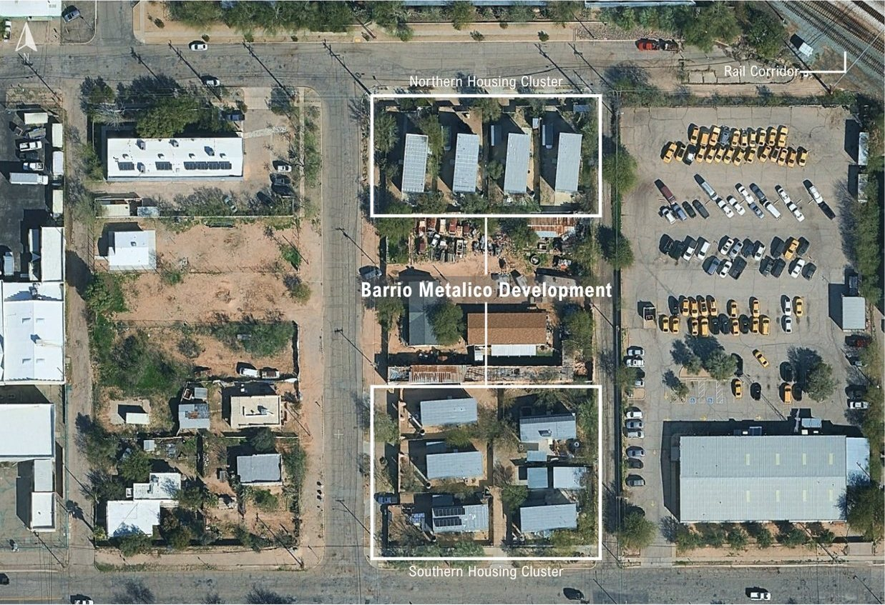

Designed by Rob Paulus Architects in Tucson's Millville neighborhood, Barrio Metalico already has super-insulated walls and roofs, solar-conscious orientation, salvaged materials, rainwater harvesting, and plumbing ready for solar hot water. Some units already carry rooftop panels.
That makes it a harder and more realistic question than a typical retrofit. There's no obvious flaw to fix. The work is in targeted refinements that cut what's left of the cooling load, then sizing renewables to cover the rest.
